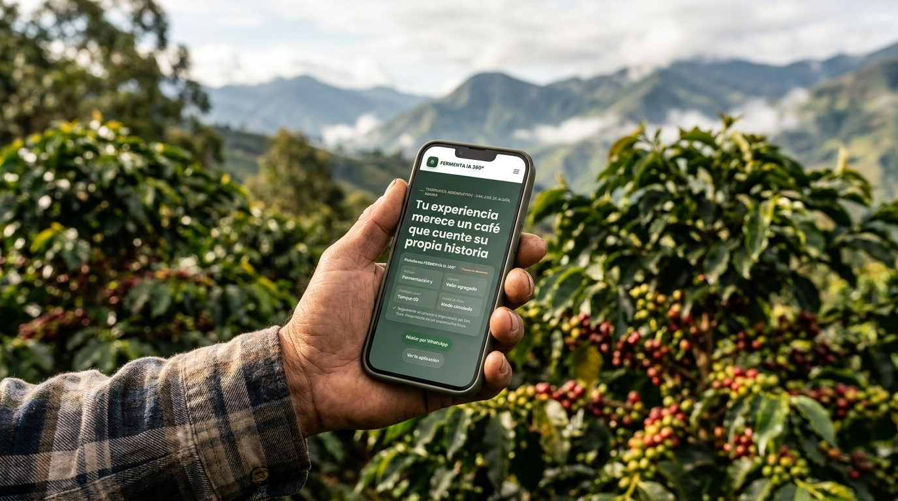

Fermentación difícil de controlar
Definir el punto de corte suele depender de la experiencia, sin registros constantes de tiempo, temperatura o pH.
Repetir un buen resultado entre lotes se vuelve un desafío.
FERMENTA IA 360° es una plataforma pensada para acompañarte desde la fermentación hasta la preparación de tu café para el mercado.
Te ayuda a hacer seguimiento al proceso, organizar la información de cada lote y reunir evidencias que aporten valor a tu trabajo en la finca.
Tecnología pensada para acompañar el trabajo en las fincas cafeteras de San José de Albán.
Situaciones identificadas en el sector y en el planteamiento del proyecto, que deben validarse con productores de San José de Albán.
Definir el punto de corte suele depender de la experiencia, sin registros constantes de tiempo, temperatura o pH.
Repetir un buen resultado entre lotes se vuelve un desafío.

Los datos de variedad, proceso y resultados pueden quedar en notas o recuerdos separados.
Sin trazabilidad ordenada, es difícil comparar y explicar cada café.

Preparar el producto para la venta exige mostrar con claridad su proceso y sus características.
Reunir esa información puede ser complejo al buscar nuevos compradores.
Cada funcionalidad se plantea como apoyo al trabajo del caficultor. El estado real de implementación se indica en cada tarjeta.
Ayudaría a seguir variables clave para comprender mejor cada fermentación.
Facilitaría registrar la duración del proceso y comparar tiempos entre lotes.
Permite explorar el prototipo y sus componentes de forma visual y educativa, en coherencia con la fermentación en biorreactores.
Buscaría registrar distintos manejos para aprender de cada prueba realizada.
Organizaría procesos anteriores para consultar, comparar y tomar mejores decisiones.
Orientaría con base en lo registrado, como apoyo y no como reemplazo del criterio.
Facilitaría resumir datos del lote para revisarlos o presentarlos con orden.
Ayudaría a reunir información del proceso para preparar la presentación del café.
FERMENTA IA 360° busca apoyar el seguimiento de la fermentación en biorreactores y la organización de la información de cada lote.

Uso de tecnología móvil en el cultivo como referencia visual del acompañamiento al caficultor.
Explora el prototipo real del tanque 3D y conoce los módulos previstos. Las pantallas no implementadas se presentan como diseños conceptuales, no como funciones operativas.
Modelo interactivo del prototipo para identificar componentes y comprender el proceso de fermentación en biorreactores.


Representación del seguimiento de variables dentro del prototipo, útil para ilustrar el concepto de monitoreo.
Vista general para acceder a lotes, seguimiento del proceso y herramientas de apoyo.
Permitirá registrar variaciones del proceso para comparar manejos y aprender de cada prueba.
Ayudará a conservar, consultar y comparar la información de fermentaciones anteriores.
Ofrecerá orientación basada en la información registrada, como herramienta complementaria.
FERMENTA IA 360° busca facilitar que el productor organice lo que ocurre en su café y lo comunique con mayor claridad al prepararse para la comercialización.
Registrar variedad, procedencia y datos básicos del lote para identificar cada café.
Organizar tiempos, tratamientos y condiciones del proceso cuando la información esté disponible.
Conservar la historia del lote para comparar procesos y entender los resultados obtenidos.
Reunir información que ayude a describir las características y el manejo de tu café.
Ordenar fichas, resultados de calidad (si existen) y costos para una presentación más clara.

Ejemplo ilustrativo de organización de datos. No representa un documento generado por la aplicación actual.
La tecnología puede ser una aliada para organizar tu proceso, comprender mejor tu fermentación y mostrar el valor de tu trabajo.
+57 321 907 4520